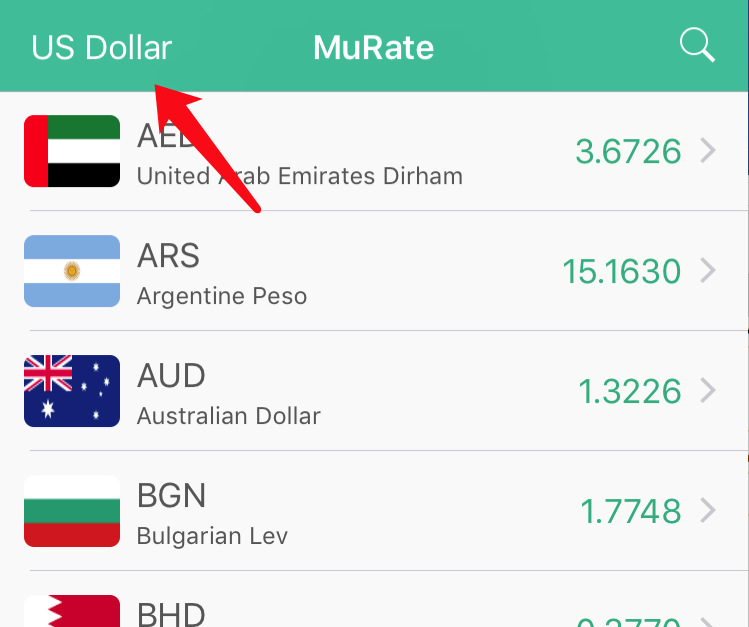
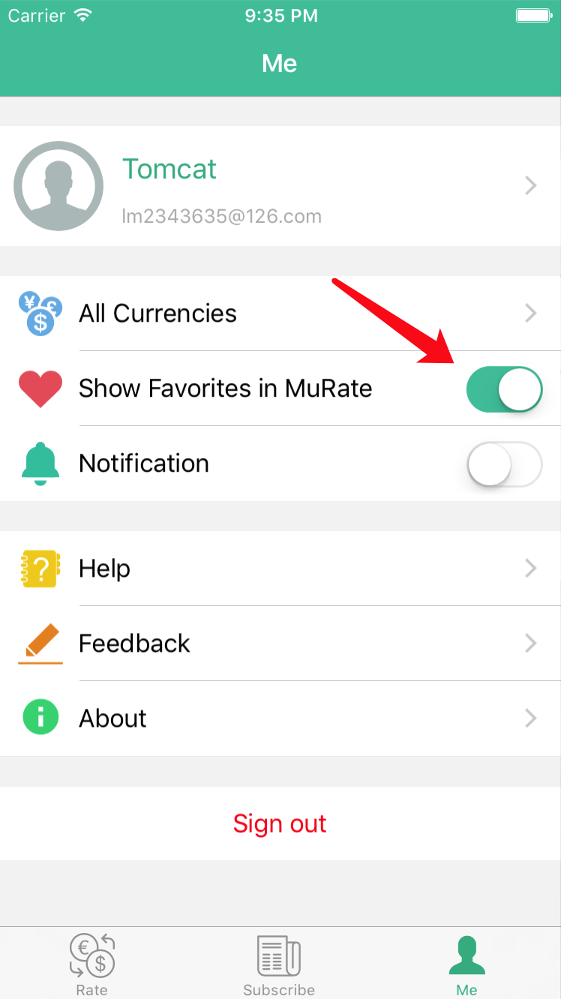
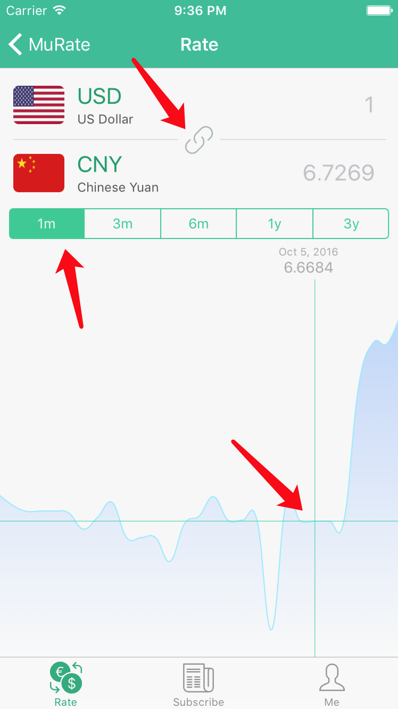
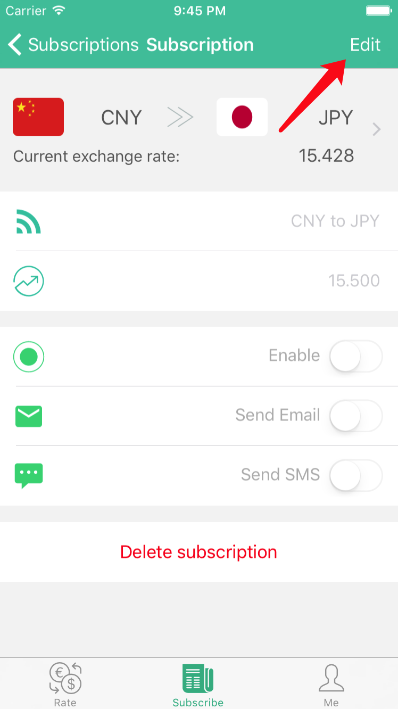

iOS Client of MuRate - A rate search and subscription application. MuRate is a exchange rate search app, which includes current rate, history rate and monitoring.
- Search current and historical currency exchange rate.
- Show favorite currencies in the main page after signing in.
- Monitoring exchange rate you concentrate on after subscription.
- Push notification to your iOS devices when the exchange rate is larger or less than the threshold you set.
1. Select a based currency. If you do not select it, US Dollar is the default based currency.
The exchange rates in the table list is from US Dollar to other currencies.

2. If you signed in, you can choose some favorite currencies in the currencies list. Only favorite currencies' exchange rate are listed in rates list after setting Show Favoritein MuRate to ON.

3. Remember to active your account by clicking the link in active mail, so that alert email can be sent to you mail box.
4. You can select a slot like 1 month, 3 month or 1 year to show the rate history in this period.

5. Swap currencies in Rate by clicking the button in the ccenter.
6. Move your finger in rate history chart to show rate in a day during the period you selected.
7. When you want to modify your subscription, click Edit button at first, to enable switches.
